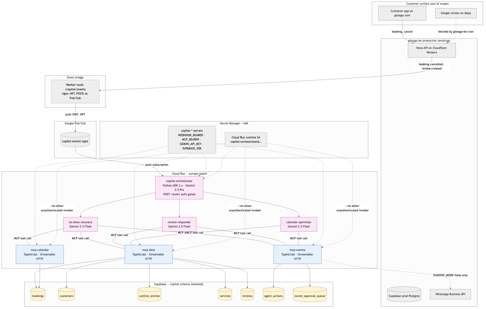
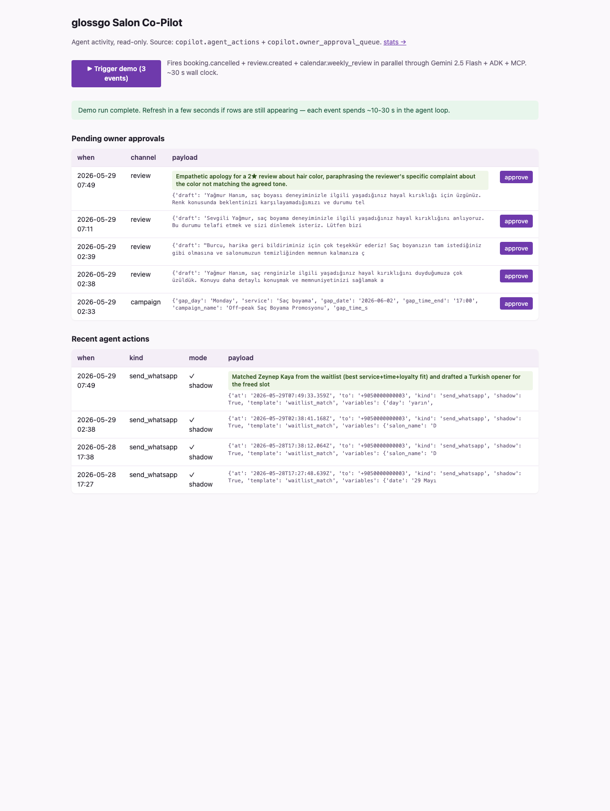
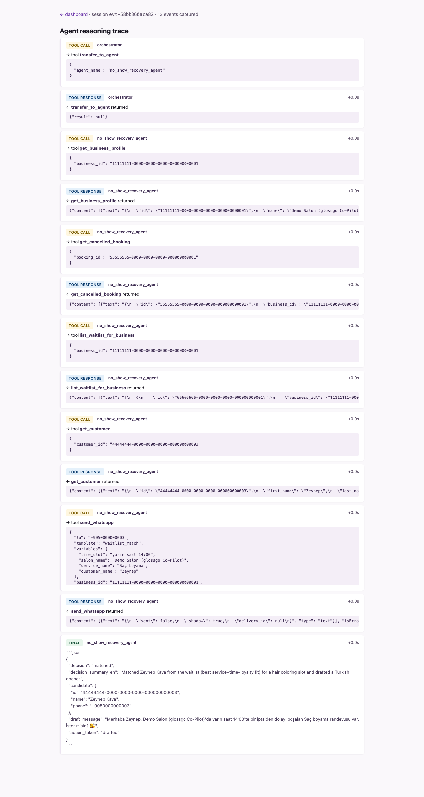
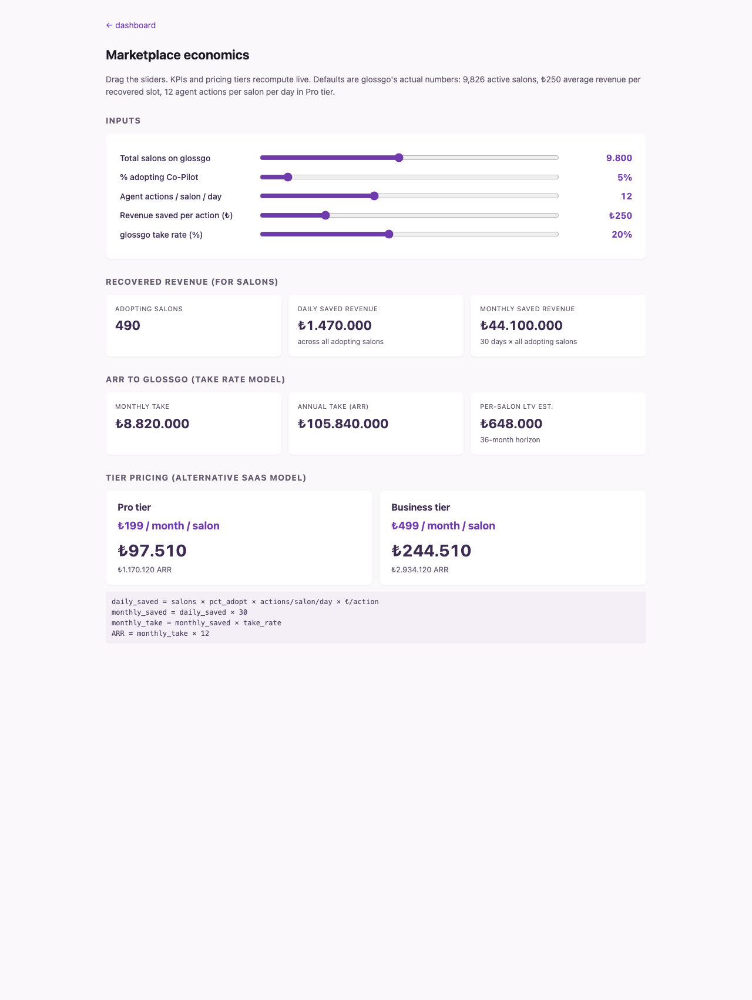

An autonomous multi-agent system that drafts WhatsApp messages to recover cancelled bookings, responds to Google reviews in Turkish, and proposes off-peak promotions — all while the owner is busy with a customer in the chair.
An ADK orchestrator on Gemini 2.5 Flash takes booking, review, and weekly-calendar events from production and routes each one to the right specialist sub-agent.
When a booking is cancelled, ranks the waitlist on a 50-30-20 service / time-window / loyalty weighting, picks the best match, and drafts a personalized Turkish WhatsApp opener.
28 s liveClassifies a new Google review by rating, drafts a tone-matched Turkish reply (empathetic for 1-2★, thankful for 5★), and pushes it to the owner approval queue. Never auto-publishes.
17 s liveRuns every Monday morning. Finds the single biggest off-peak gap in the next 7 days and drafts one targeted Turkish promotion with an audience tag. Refuses to invent on empty data.
4 s liveEvery box on this diagram is a real Cloud Run service or MCP tool. Each MCP server runs as both a stdio subprocess for local dev and a Streamable HTTP service in production — same binary, two transports.

docs/architecture.mmd in the repo. Rendered with mmdc.Each surface is a different angle on the same agents. The dashboard is bilingual: English decision summary above, Turkish customer draft below. Click any session, see the full reasoning trace.



Same auth (cookie session or Authorization header), different lens on the same data.
Pending owner approvals + recent agent actions, with a one-click button that fires all 3 agents in parallel.
Every ADK event for a session — routing, tool calls, responses, final draft. The opposite of a black-box agent.
Rollups over agent_actions and the approval queue. Shadow-mode percentage is rendered explicitly.
Five sliders, three KPI groups, two pricing tiers. Drag the assumptions, see what the business case looks like.
Click "Trigger demo" once you're in. All three agents will run in parallel — about 22 s wall clock.
Open the dashboard →